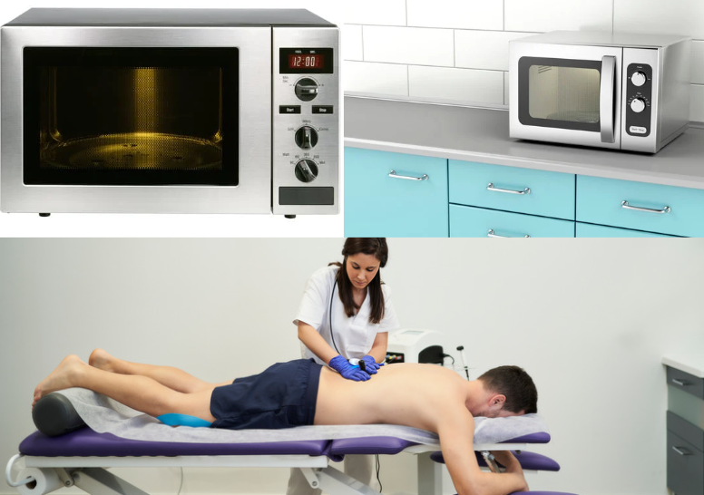

Ondas de Micro-ondas
- Definição: Micro-ondas são uma forma de radiação eletromagnética. Micro-ondas são uma forma de radiação eletromagnética que se caracteriza por suas propriedades únicas de interação com a matéria.
- Frequência e Comprimento: As micro-ondas variam em comprimento de onda entre 1 mm e 30 cm, sendo superiores às ondas de rádio. Uma frequência comum para micro-ondas é 2450 MHz, que é frequentemente utilizada em fornos de micro-ondas e outras aplicações.
- Aplicação:Usadas em telecomunicações, equipamentos de radioterapia, câmeras de segurança, radares para medir a velocidade de veículos, técnicas de diagnóstico, termoterapia, aparelhos de diatermia, tratamentos de câncer, fornos de micro-ondas para aquecer alimentos, pipoqueira, sistemas de aquecimento em veículos, aquecimento de alimentos em restaurantes, sistemas de navegação e transmissão de dados.
- Efeito: As micro-ondas podem ser perigosas para tecidos vivos, exigindo blindagem especial nos aparelhos para garantir a segurança. Elas são classificadas como radiação não ionizante, o que significa que não têm energia suficiente para ionizar átomos ou moléculas.
Aplicações:
